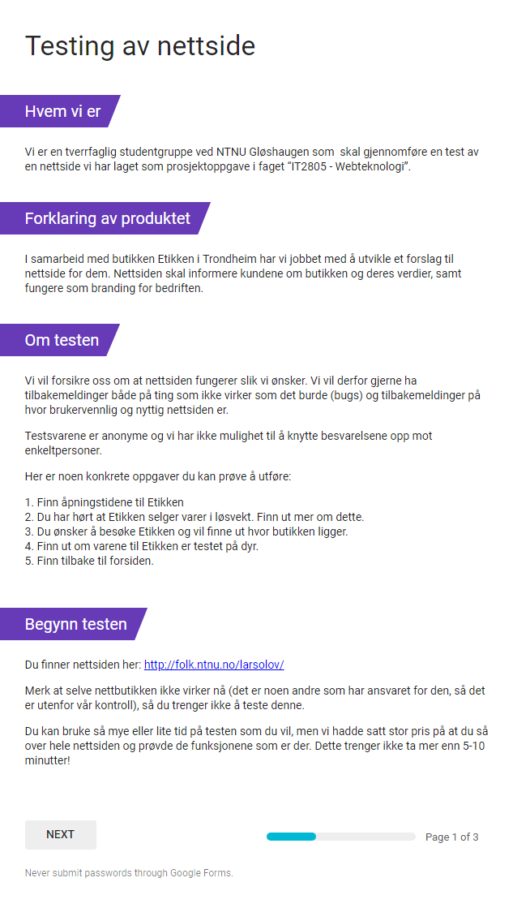
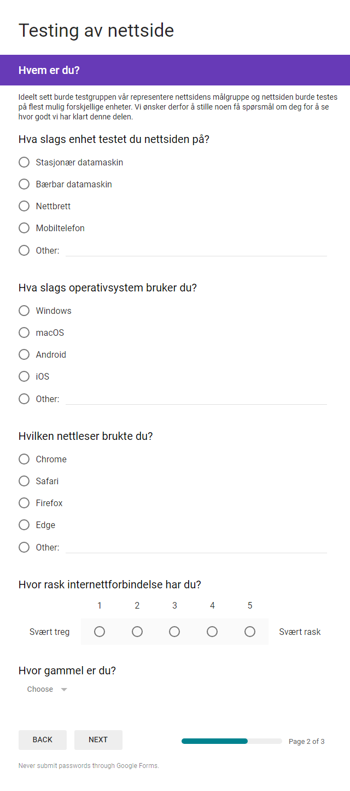
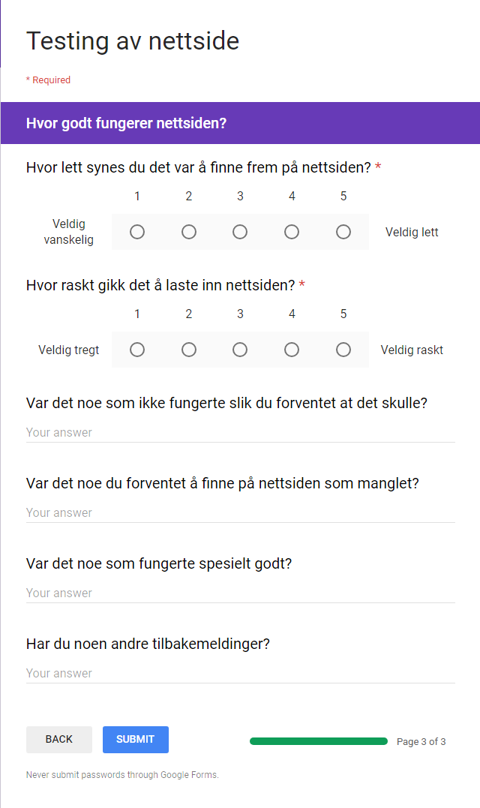
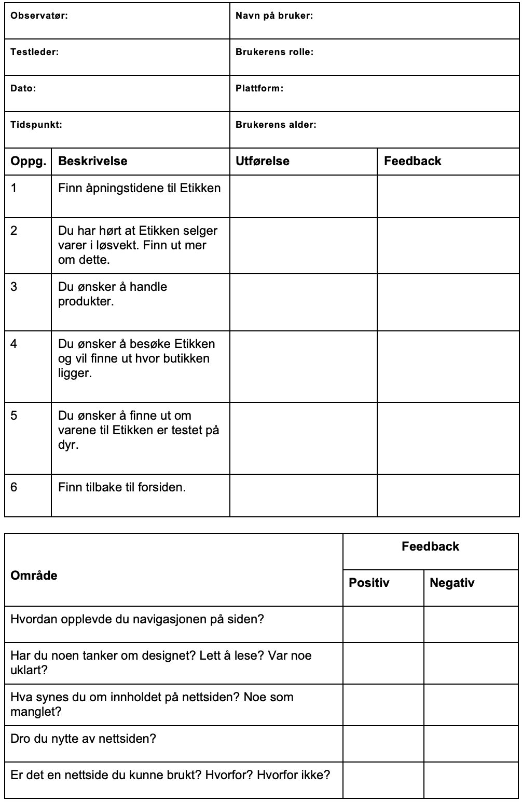

08.11.2018
Vår kunde er Etikken BA, en kolonialbutikk i Trondheim som blant annet tilbyr økologisk, fairtrade og kortreist mat. Kontaktpersonen vår er Alan Lorin, som driver butikken på vegne av sin bror.
Ved brukertesting er det viktig å ikke avsløre hvilke deler av løsningen vi ønsker å teste. Dette kan villede testobjektet og kan føre til uærlige svar. Det er derimot essensielt at bruker får tilstrekkelig informasjon om hvem gruppen er, om prosjektet og hvilke oppgaver vedkommende skal gjøre. Det skal altså være fokus på menneskene og deres oppgaver, men det er viktig å få fram at det er løsningen som skal testes, ikke personen.
Gjennom brukertesting søker man empirisk bevis på hvordan man kan forbedre bruken. Den skal fokusere på å identifisere frustrasjons- og forvirringspunktene ved grensesnittet. For å kartlegge disse punktene skal man ta utgangspunkt i typisk sluttbrukermål. Sluttbrukermålene baseres på personasene definert i startfasen av prosjektet. Oppgavene skal altså være spesifikke, konkrete og reflektere faktiske mål for brukergruppen.
Ved brukertesting er det viktig og nyttig for oss som utviklere og designere å observere hvordan testobjektet reagerer til de ulike gitte oppgavene. Det er derfor viktig å kartlegge forhold der brukeren
Etter å ha testet rundt fem personer (eller til vi ikke blir overrasket over resultatet mer) skal dette gi en indikasjon på hvor vi har oppfylt krav til godt brukergrensesnitt og punkter løsningen trenger forbedringer.
Ved brukertesting starter vi med en introduksjon av gruppen og prosjektet. Vi forklarer hensikten med testen (å teste prototypen, ikke personen, for å forbedre grensesnittet) og hvordan den skal gjennomføres. Vi oppfordrer også til at testobjektet bruker tenk-høyt-teknikken, som innebærer at vedkommende sier høyt sine tanker ved hver interaksjon. Dette kan gi oss verdifull informasjon hvor vi blant annet kan kartlegge forvirringspunktene vi ved neste iterasjon kan forbedre. Her er introduksjonen til brukertesten:
Hvem vi er: Vi er en tverrfaglig studentgruppe ved NTNU Gløshaugen som i faget “Webteknologi” skal gjennomføre en test av vår besvarelse på prosjektoppgaven som handler om å utvikle en nettside.
Forklaring av produktet: I samarbeid med butikken Etikken i Trondheim har vi jobbet med å utvikle et forslag til nettside for dem. Nettsiden skal informere kundene om butikken og deres verdier, samt fungere som branding for bedriften.
Hensikten med testen: Vi skal teste en high-fidelity prototype for å forsikre oss om at nettsiden fungerer slik vi ønsker. Ved å gi deg som bruker et sett med oppgaver som du skal gjennomføre med ingen eller lite hjelp, vil vi på empirisk vis kunne undersøke brukervennligheten til produktet.
Før vi begynner:
Ved teststart vil vi fortløpende tildele testobjektet oppgaver vedkommende skal gjennomføre. Vi ønsker å teste om nettsiden er intuitiv, lett å navigere seg gjennom, tilfredsstille forventningene bruker har til nettsiden og om alle koblingene stemmer med det mentale modellen til brukeren. Av dette har vi følgende oppgaver som skal hjelpe ved forbedring ved neste iterasjon:
I tillegg til brukertesten vil vi også sende ut en Google Form for å få inn mer data til analyse. Fordelen med dette er at terskelen for å gi kritisk tilbakemelding er lav, da testen er anonym. Vi får også testet nettsiden på flest mulig ulike enheter, operativsystemer, nettlesere og skjermoppløsninger. Ulempen er at vi ikke vil være i stand til å være tilstede under testingen og vi vil ikke få innblikk i hvordan testobjektet faktisk tenker og utfører de ulike oppgavene. Dette er derimot elementer vi vil få tilgang til ved brukertestingen.
Spørreskjemaet i i Google Formen starter likt som brukertesten med en introduksjon av gruppen og prosjektet. Oppgavene fra brukertesten er også vedlagt slik at testobjektet skal ha noe konkret å navigere seg etter. Bruker kan selv bestemme hvor lang tid den vil bruke på testen. I etterkant av testen vil bruker få noen spørsmål den skal svare på. Dette er for å innhente informasjon som er nyttig til videre forbedring av produktet. Det innebærer blant annet informasjon om
Videre vil testpersonen få spørsmål om funksjonaliteten til nettsiden. Blant annet om hvordan den synes den fungerer og hastigheten på å laste den inn på en skala fra én til fem. Videre oppfordrer vi også til å gi skriftlige tilbakemeldinger, men dette er ikke et krav.
Link til Google Form: bit.ly/etikken
  Vi prøvde å finne testpersoner som hovedsakelig oppfyller kravene for målgruppen, det vil si unge, nettvante mennesker som er opptatte av miljøet. For å kartlegge ytterligere problemer med brukervennligheten testet vi i tillegg på personer som ikke var like nettvante. Dette for å være sikker på at målgruppen vi har definert ikke er for begrenset med tanke på faktiske brukere.
Under er det listet testpersonene vi kontaktet og deres rolle. Rolle-kolonnen viser til målgruppene vi definerte i P1 (nysgjerrig, trendbevisst og lojal kunde):
| Testperson | Alder | Yrke | Rolle |
|---|---|---|---|
| Amalie | 21 | Student | Nysgjerrig |
| Ivar | 21 | Student | Nysgjerrig |
| Karen | 21 | Student | Trendbevisst |
| Gerd | 80 | Pensjonist | Nysgjerrig |
| Ingunn | 22 | Student | Trendbevisst |
| Petter | 22 | Student | Nysgjerrig |
| Ingrid | 25 | Student | Lojal kunde |
| Øyvind | 29 | Student | Nysgjerrig |
Her er en PDF med alle brukertestskjemaene vi fikk ved testing på måten beskrevet under testoppsett. Under er et blankt eksempelskjema på disse.
I tillegg sendte vi ut et spørreskjema via Google Forms for å få mer data. Et slikt spørreskjema gir ikke like grundige tilbakemeldinger som å fysisk observere testpersoner, men det lot oss teste nettsiden på flest mulig kombinasjoner av oppløsninger, nettlesere og operativsystemer. Dette avdekket enkelte problemer som kun dukket opp ved uvanlige kombinasjoner av nettleser, enhet eller oppløsning, og var derfor svært nyttig.
En fullstendig oppsummering av svarene vi fikk finnes som PDF her, men de fleste som svarte brukte Chrome eller Safari, og rapporterte at de hadde rask internettforbindelse. Det var en god spredning mellom ulike enheter (stasjonær PC, bærbar PC eller mobiltelefon), operativsystemer (iOS, macOS, Android og Windows) og aldersgrupper.
Alle som svarte mente det var svært lett å navigere nettsiden, og de fleste rapporterte at den ble lastet inn raskt. Vi fikk flere kommentarer på at siden var ryddig og oversiktlig.
Testene ble utført på brukernes egne enheter og nettlesere. PC, Mac, Iphone og Android-telefon var enhetene som ble brukt med Chrome, Safari, Firefox og Waterfox som nettleser.
Vi fikk veldig mange gode tilbakemeldinger på vårt design. Flere kommenterte at de likte at de ikke ble overveldet av informasjon og tekst. Vi fikk også et par negative kommentarer om enkelte designvalg som omhandlet fargevalg. Fargen til boksen for åpningstider ble kommentert at ikke passet helt inn. Etter å ha endret denne til gjennomsiktig hvit ble testerne derimot fornøyde. På mobilskjermer fikk vi kommentarer på at boksen for åpningstider delvis havnet bak logoen og at det var lav oppløsning på bakgrunnsbildet på “Produkter”. Vi fikk også kommentarer om at noen slet med å lese teksten (linkene) som var lysegrønne, derfor endret vi de til mørkegrønne. Det ble også kommentert at dropdown-menyen er lite lesbar på fremsiden, men dette er nå fikset og godkjent som lesbart av brukere.
Flere sa det var logisk navigasjonsstruktur på nettsiden, men noen trodde man fant ut hvor butikken var på “Om oss” isteden for “Kontakt”. Vi fikk også tilbakemelding om at det burde være en dropdown-meny for “Produkter”-siden da denne har mye av samme oppbygning som “Våre verdier”, noe vi endret.
Vi fikk tilbakemelding på at det var en informativ nettside, men at det samtidig ikke ble for mye informasjon. Det var også en kommentar om at nettbutikken burde vært integrert i nettsiden. Da må designet endres for å gi mulighet til å logge inn, ha handlekurv osv.
Det var tilbakemelding på at det kunne vært tydeligere på at mer informasjon finnes ved nedscrolling. Vi fikk også tilbakemelding på at link til sosiale medier kunne vært tydeligere plassert på forsiden.
Vi har implementert følgende endringer på bakgrunn av tilbakemeldingene vi fikk under testingen:
Andre problemer funnet under testingen som vi ikke har tid eller mulighet til å fikse:
Brukertestene avdekket at det er mye på nettsiden som kunne vært endret for å få den mer brukervennlig. Om vi hadde hatt mer tid ville vi selvfølgelig ha endret på dette for å få en mest mulig brukervennlig nettside, men denne gangen ble det dessverre ikke tid til det.
Vi lærte mye av dette prosjektet. Ingen av oss har lagd en nettside før, så det å jobbe med en nettside gjennom hele prosessen fra idé til et ferdig produkt har vært utrolig lærerikt. Vi har lært at det oppstår uforutsette problem underveis og at produktet ikke blir helt som man så for seg på starten. Det er mange ting man ikke tenker på om brukervennlighet som andre oppfatter som et problem. Fargevalg og kontrast er viktig for lesbarheten. Forklarende ord i menyen er viktige for at brukere velger riktig side når de leter etter informasjon. Dette har vi lært at kan avdekkes med brukertester. Brukertester der man observerer brukeren når vedkommende løser oppgaver med produktet er gull verdt for å avdekke slike feil.
Vi har også lært mye om gruppearbeid. Samarbeid har sine fordeler og ulemper. Ulempene er at det er vanskelig å finne møtetidspunkt hvis man er i en gruppe der medlemmene har ulike timeplaner. Fordelene er at vi har ulik kompetanse som vi sammen kan bruke til å løse oppgaven best mulig. Vi får også hjelp av hverandre når det oppstår problem.
Oppgaven oppfordret oss til å opprette en nettside for en reell kunde. Dette gjorde at prosjektet føltes mer ekte og at det ferdige produktet faktisk hadde en betydning. Vi lærte mer om hvordan det er å samarbeide med noen eksterne og hvordan man skal gå fram for å tilfredsstille kravene til kunden. Samtidig lærte vi at det kan være vanskelig å få produktet slik kunden ønsker om den ikke gir oss nødvendige ressurser. I løpet av dette prosjektet har vi altså erfart og lært hvordan man arbeider utenom skolens trygge rammer. Dette gjør oss bedre rustet til å angripe liknende situasjoner etter studietiden.